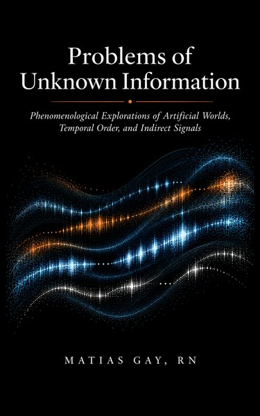
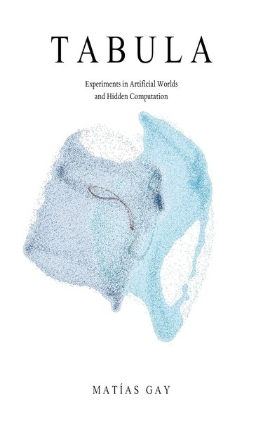

01 / AVIARY
Maradonna
Eight pigeon-inspired synthesis species, granular timbres, evolving geometric forms, Web MIDI where supported, and a short synthetic vocal greeting.
Two playable audiovisual instruments built from the same original C synthesis engines used in our M-VAVE FM-1 development projects. Explore sound, morphology, and motion directly in the browser. Source is available under the applicable GPL licence.
Eight pigeon-inspired synthesis species, granular timbres, evolving geometric forms, Web MIDI where supported, and a short synthetic vocal greeting.
Plucked voices, synthesized vocal gestures, percussion, aged-phonograph textures, and audio-reactive fluid geometry across eight scenes.
Eight generated Maradonna timbres, rendered offline from the original native C engine. These are demonstrations, not recordings of FM-1 hardware or a VST plugin.
Modelling what experience hides. Three books by Matias Gay on information, artificial worlds and the structure of possibility. Available as Kindle, paperback and hardcover.

What the record leaves out.
Explore on Amazon
What a system is really computing.
Explore on Amazon
What makes a future reachable.
Explore on Amazon